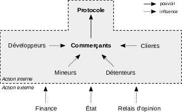

11 La détermination du protocole
Dans Bitcoin, le protocole est l’ensemble ouvert de règles qui interviennent dans la formation et la transmission des blocs et des transactions sur le réseau. Il est notamment constitué des règles de consensus qui régissent la validité du registre sur lequel les nœuds du réseau se mettent d’accord. Ces règles sont mises en œuvre par des implémentations logicielles, qui peuvent être librement copiées, modifiées et réutilisées à volonté.
Cette nature ouverte et libre fait qu’il n’y a pas d’autorité centrale qui décrète quelles sont les règles comme cela se fait dans les modèles centralisés, mais que cette prise de décision est répartie au sein de la communauté. C’est pourquoi la détermination du protocole n’est pas un mécanisme technique mais économique, conformément à la nature essentiellement monétaire de Bitcoin.
Il s’agit d’un thème d’importance majeure, car ce mécanisme de détermination garantit l’intégrité des règles de consensus et, par conséquent, le bon fonctionnement du système. En particulier, c’est de lui que provient la fameuse résistance à l’inflation, à savoir la difficulté à créer plus de bitcoins. Il est donc fondamental d’avoir une bonne conception de ce mécanisme si nous voulons nous convaincre de la viabilité de Bitcoin.
La résistance à l’inflation
L’une des deux grandes promesses de Bitcoin est de résister à l’inflation monétaire, c’est-à-dire de rendre difficile la création supplémentaire d’unités par rapport à ce qui est accepté par le marché. Cette promesse est énorme : comme nous l’avons vu dans le chapitre 4, l’État fait tout ce qu’il peut pour profiter de la création monétaire, phénomène qu’on appelle le seigneuriage. De prime abord, il paraît ainsi étonnant qu’un objet numérique puisse posséder une telle propriété.
La politique monétaire classique du bitcoin a été établie par Satoshi Nakamoto lors du lancement du prototype le 8 janvier 20091. Celle-ci possédait un caractère simple : la création monétaire devait être réduite de moitié tous les quatre ans, de façon à devenir négligeable au fil du temps. Il devait se créer 10,5 millions d’unités de manière linéaire les quatre premières années, 5,25 millions les quatre suivantes, 2,625 millions les quatre d’après, et ainsi de suite, ce qui limitait le nombre d’unités en circulation à 21 millions. Le bitcoin devait finir par devenir une monnaie à quantité fixe, quelque chose qui n’a jamais été vu dans l’histoire.
1 « établie par Satoshi Nakamoto lors du lancement du prototype le 8 janvier 2009 » : Satoshi Nakamoto, Bitcoin v0.1 released, /01/2009 19:27:40 UTC : https://www.metzdowd.com/pipermail/cryptography/2009-January/014994.html.
Cette politique monétaire a été l’un des arguments de vente de Bitcoin, si bien que certaines personnes se sont imaginées qu’il s’agissait d’une chose immuable, gravée dans le marbre, et que l’application mathématique de ce décret de Satoshi Nakamoto était ce qui garantissait la résistance à l’inflation du système. Par exemple, Tyler Winklevoss, ayant investi dans le bitcoin avec son frère jumeau Cameron, se convainquait en 2013 qu’il avait acheté un actif dépourvu d’intervention humaine :
« Nous avons choisi de placer notre argent et notre confiance dans un cadre mathématique exempt de politique et d’erreur humaine2. »
2 Nathaniel Popper, Peter Lattman, « As Big Investors Emerge, Bitcoin Gets Ready for its Close-Up », CNBC, 11 avril 2013 : https://www.cnbc.com/id/100635418.
Toutefois, cette conception est au mieux une approximation maladroite. Il ne suffit pas qu’une règle ait été décrétée par quelqu’un dans le passé pour qu’elle se manifeste dans la réalité présente ; il faut aussi que d’autres personnes l’acceptent et l’appliquent. Et cette acceptation est précisément soumise à la politique et à l’erreur humaine.
Il existe au sujet de la politique monétaire fixe du bitcoin une certaine confusion. Il faut dire que Satoshi Nakamoto n’a jamais précisé comment elle pouvait être protégée. Plusieurs théories ont été proposées, allant de l’intervention des mineurs à l’exigence d’unanimité communautaire3, en passant par le caractère juridique du décret de Satoshi4. Dans tous les cas, il s’agissait de traiter la question de la « gouvernance5 » ou du « consensus social6 », c’est-à-dire de la façon dont les règles sont décidées dans Bitcoin. C’est cette problématique que nous appelons ici la détermination du protocole.
3 « l’exigence d’unanimité communautaire » : River Financial, Can Bitcoin’s Hard Cap of 21 Million Be Changed? : https://river.com/learn/can-bitcoins-hard-cap-of-21-million-be-changed.
4 « le caractère juridique du décret de Satoshi » : https://craigwright.net/blog/law-regulation/forking-and-passing-off/.
5 Pierre Rochard, Bitcoin Governance, 9 juillet 2018 : https://pierre-rochard.medium.com/bitcoin-governance-37e86299470f.
6 Arthur Breitman parlait de social consensus dès août 2014 dans la première description formelle de Tezos. – Arthur Breitman, Tezos: A Self-Amending Crypto-Ledger, 3 août 2014 : https://tezos.com/position-paper.pdf.
Le pouvoir des commerçants sur le protocole
Tel que nous l’avons laissé entendre, la détermination du protocole est accomplie par l’économie. Puisque Bitcoin est un système économique, il est naturel que les règles qui le composent résultent du marché, et non d’un décret fixe passé ou d’une autorité centrale actuelle.
L’idée que l’économie permet de déterminer les règles n’est pas nouvelle. Elle remonte au moins au printemps 2012 lorsque Meni Rosenfeld écrivait sur Stack Overflow qu’un changement du protocole nécessitait « une majorité économique, c’est-à-dire l’adoption par les utilisateurs et les entreprises qui donnent de la valeur à la monnaie7 ». Gavin Andresen lui-même a mis en avant cette idée en mai 2015, alors que la question d’augmenter la taille limite des blocs se posait :
7 Meni Rosenfeld, Re: How could the bitcoin protocol be changed? Has this ever occurred?, /06/2012 13:53:19 UTC : https://bitcoin.stackexchange.com/questions/3945/how-could-the-bitcoin-protocol-be-changed-has-this-ever-occurred#comment4983_3948.
8 Gavin Andresen, [Bitcoin-development] Proposed alternatives to the 20MB step function, /05/2015 12:39:30 UTC, https://lists.linuxfoundation.org/pipermail/bitcoin-dev/2015-May/008340.html.
« Si nous ne parvenons pas à un consensus ici, l’autorité ultime pour déterminer le consensus est le code utilisé par la majorité des commerçants, des plateformes de change et des mineurs8. »
Mais la clarté de cette conception n’est arrivée qu’après les évènements de la guerre des blocs, au cours de laquelle les mécanismes sous-jacents ont pu s’exprimer. Ce n’étaient pas les développeurs qui décidaient des règles, ce n’étaient pas les mineurs non plus, mais plutôt les utilisateurs, et plus précisément les commerçants. Eric Voskuil écrivait ainsi en novembre 2018 :
« Bitcoin ne repose pas sur un dépositaire, mais dans l’intérêt d’établir un principe général, on peut considérer l’ensemble de tous les commerçants comme le dépositaire collectif de Bitcoin9. »
9 Eric Voskuil, « Principe de risque de garde », in Cryptoéconomie : Principes fondamentaux de Bitcoin, Amazon KDP, 2022, pp. 34–35.
10 Cette réalité a été perçue en janvier 2010 par NewLibertyStandard, le premier commerçant de Bitcoin, lorsqu’il a déclaré : « Toutes les personnes qui achètent ou vendent des biens en utilisant des bitcoins, y compris les changeurs, font progresser l’économie de Bitcoin ! » – NewLibertyStandard, Re: New Exchange Service: "BTC 2 PSC", /01/2010 08:06:15 UTC : https://bitcointalk.org/index.php?topic=15.msg111#msg111.
Les commerçants, au sens large, sont les personnes qui fournissent des biens, des services ou d’autres monnaies contre du bitcoin, à des prix acceptables sur le marché. Cette prestation se manifeste par les échanges effectifs avec les clients et s’estime par les recettes perçues. En cela, les commerçants contribuent à l’utilité du bitcoin, qui se mesure à la quantité de biens et de services qu’il permet d’acquérir, et par conséquent à l’importance économique de la chaîne10. Par l’utilisation d’un nœud permettant de vérifier les règles de consensus, ils participent ainsi à la détermination du protocole en proportion de leur activité économique potentielle.
Parler d’un protocole unique qui changerait est une inexactitude : en tant qu’ensemble de règles, les protocoles sont tous fixes, mais leur utilisation (et leur utilité) varie. Modifier le protocole consiste donc à constituer un nouveau protocole dont la chaîne résultante sera économiquement plus importante que toute autre branche concurrente, y compris celle liée au protocole originel11. Par exemple, SegWit a été un soft fork contentieux, mais le protocole résultant a été beaucoup plus valorisé que les protocoles concurrents (BTC pré-SegWit et Bitcoin Cash), de sorte qu’on peut dire que le protocole BTC a été mis à niveau par cette modification.
11 Jeff Garzik écrivait très justement en octobre 2010 que « l’effort visant à augmenter la limite du taux de transaction [était] le même que celui visant à modifier la nature fondamentale des bitcoins : convaincre la grande majorité de se mettre à niveau ». – Jeff Garzik, Re: [PATCH] increase block size limit, /10/2010 18:33:55 UTC : https://bitcointalk.org/index.php?topic=1347.msg15342#msg15342.
Bitcoin-le-concept englobe par nature une multiplicité de protocoles, en raison de son caractère libre et ouvert. Il n’y a pas un seul protocole Bitcoin, mais plusieurs, comme il y a plusieurs distributions Linux ou plusieurs dollars. Et ces protocoles sont en concurrence pour acquérir une utilité en étant adoptés par les commerçants.
Ce qui compte, c’est donc l’importance économique des chaînes créées par ces protocoles. Chacun peut bien définir Bitcoin comme il le souhaite, notamment en décrétant qu’il n’y a qu’un seul protocole et qu’il ne peut pas être modifié sans unanimité, mais cette attitude ne change pas la réalité économique des choses. Si la chaîne créée par une modification rassemble 80 % de l’activité économique, la chaîne suivant les règles du protocole originel continuerait d’exister, mais serait lourdement déclassée et perdrait en pertinence. Comme l’écrivait Arthur Breitman en 2014, « l’option de s’en tenir au protocole originel n’est pas du tout pertinente si la valeur de ses jetons est annihilée par un changement de consensus12 ».
12 Arthur Breitman, Tezos: A Self-Amending Crypto-Ledger, 3 août 2014 : https://tezos.com/position-paper.pdf.
Tout ceci explique les usages qui se sont développés naturellement dans l’écosystème. On appelle usuellement Bitcoin la mise en œuvre principale et dominante économiquement du concept. En cas de scission, le nom et le sigle boursier du protocole originel sont généralement conservés par la branche majoritaire, que celle-ci garde les règles initiales (Bitcoin-BTC) ou qu’elle les modifie (Ethereum-ETH) ; tandis que la branche minoritaire doit modifier son propre nom, soit en le rallongeant pour insister sur la continuité (Bitcoin Cash, Bitcoin SV, Ethereum Classic), soit en le remplaçant par une nouvelle marque (« eCash » / XEC).
Cette mécanique économique fait que la résistance au changement provient des commerçants qui refusent d’intégrer les règles. Ainsi, une modification qui amoindrirait les propriétés fondamentales de Bitcoin, comme une introduction de censure ou d’inflation, ne serait effective que si les commerçants l’acceptaient. Or ceux-ci sont récompensés par ces propriétés en bénéficiant de la liberté liée à l’absence de censure (permettant notamment l’évasion fiscale) et de l’augmentation en pouvoir d’achat des fonds reçus, et sont par conséquent incités à ne pas accepter un tel changement. En particulier, la « déflation naturelle13 » du bitcoin forme l’incitation économique qui maintient sa politique monétaire singulière.
13 Satoshi Nakamoto, Re: A few suggestions, /12/2009 16:51:25 UTC : https://bitcointalk.org/index.php?topic=12.msg62#msg62.
14 Eric Voskuil, « Modèle de sécurité qualitatif », in Cryptoéconomie : Principes fondamentaux de Bitcoin, Amazon KDP, 2022, pp. 59–62.
À l’instar de la sécurité minière, la sécurité commerciale d’une chaîne, c’est-à-dire la difficulté à en modifier les propriétés fondamentales, ne dépend pas uniquement de l’activité économique de la chaîne (les recettes), mais aussi de la distribution de cette activité économique et du nombre de commerçants par rapport au reste de la population mondiale14. Une activité économique concentrée dans les mains d’un seul acteur rend très facile toute modification du protocole. De même, si l’activité économique est élevée et équitablement répartie entre un petit nombre de commerçants, alors le protocole a plus de chances d’être modifié qu’en présence d’un grand nombre de commerçants.
Tout comme les mineurs qui délèguent leur pouvoir sur la sélection des transactions (« hacheurs »), les commerçants peuvent déléguer leur pouvoir sur la vérification des règles de consensus. Les commerçants abandonnent ce pouvoir aux services délégataires à qui ils versent une commission dans le but de réduire la difficulté d’utilisation (le déploiement d’un nœud) et le coût de transaction (lié aux remises des frais). Ces services délégataires peuvent être des fournisseurs de portefeuille (Electrum, Acinq, Edge, Ledger, Trezor), des processeurs de paiement (BitPay, Coinbase Commerce) ou même des explorateurs de blocs (Blockchair, Mempool.space).
La délégation de la vérification pose un problème évident de centralisation. Même si l’économie peut s’adapter rapidement et redevenir saine à moyen terme par le déploiement de nouveaux nœuds, la sécurité commerciale instantanée de la chaîne est affectée par cette délégation et une attaque de modification ou de suppression du protocole peut causer des dégâts à court terme non négligeables.
Cet impact peut être d’autant plus fort si la délégation s’accompagne d’une délégation de la propriété auprès d’un dépositaire, auquel cas le réel commerçant devient le dépositaire en question, celui-ci ayant un contrôle total sur les fonds. C’est notamment le cas des places de marché en ligne qui achètent et vendent d’autres monnaies en bitcoins, tout en mettant en place des carnets d’ordres internes pour résoudre l’offre et la demande.
À l’heure d’écriture de ces lignes, la situation dans Bitcoin est particulière, car l’activité économique est dominée par le change entre le bitcoin et les monnaies officielles. Déjà à l’époque de Satoshi, les changeurs constituaient les premiers commerçants de Bitcoin : la première chose achetée avec du bitcoin n’était pas une pizza comme on aime le penser, mais de la monnaie, à savoir 5,02 dollars sur PayPal15. Aujourd’hui, les plateformes de change centralisées telles que Kraken, Coinbase et Binance ont pris la relève, ce qui fait que l’économie est aujourd’hui extrêmement centralisée et sensible aux attaques.
15 Le premier commerçant, NewLibertyStandard, a « vendu » 5,02 $ contre 5 050 BTC à Martti Malmi, le premier client, le 12 octobre 2009. On peut aussi arguer que le mineur du bloc 2 817 qui a reçu 2 BTC en frais de transaction le 3 février 2009 a techniquement été le premier commerçant pour son service, mais la somme impliquée était négligeable.
Comme dans le cas de l’attaque de censure, l’attaque d’altération des propriétés fondamentales de Bitcoin ne risque pas de provenir d’un acteur économique rationnel, qui n’a aucun intérêt à le faire, mais plutôt d’agents politiques agissant au nom de l’État. La nature d’une telle attaque répondrait donc aux prérogatives étatiques comme la lutte contre le blanchiment des capitaux et le financement du terrorisme (LCB-FT) ou bien l’opposition à la spéculation contre la monnaie nationale. Les plateformes de change, hautement réglementées seraient les premières concernées par une telle attaque.
Ainsi, ce sont les commerçants qui déterminent le protocole en choisissant les règles de consensus qui leur conviennent, qu’ils vérifient systématiquement par l’intermédiaire de leurs nœuds. Le pouvoir individuel du commerçant est pondéré par son offre économique susceptible d’être acceptée, qui est estimée par son activité économique réelle. Cependant, ce pouvoir n’est pas linéaire, dépendant en particulier de l’effet de réseau.
L’effet de réseau
Le pouvoir direct d’un commerçant n’est pas purement individuel. Bitcoin étant une monnaie, il est soumis à des effets économiques, dont le principal est l’effet de réseau. Ce dernier fait qu’il y a un nombre moins élevé de mises en œuvre de Bitcoin que ce qu’on attendrait pour un produit matériel classique.
L’effet de réseau est le phénomène par lequel l’utilité réelle d’une technique ou d’un produit dépend de la quantité de ses utilisateurs. Il s’agit d’un effet qui s’auto-alimente, qui fonctionne comme un cercle vertueux : plus un système compte d’utilisateurs, plus il a tendance à en attirer de nouveaux.
Une monnaie est un réseau social et est donc soumise à l’effet de réseau. L’utilité globale du réseau n’évolue pas de façon linéaire par rapport à la taille de son économie, mais de façon superlinéaire. C’est ce qu’exprime la loi de Metcalfe qui stipule que « l’utilité d’un réseau est proportionnelle au carré du nombre de ses utilisateurs16 ».
16 La loi de Metcalfe tient son nom de Robert Metcalfe, co-créateur du protocole Ethernet et fondateur de 3com, qui avait observé cet effet en 1980 au sujet de dispositifs communicants compatibles. La loi a été formellement énoncée par George Gilder en 1993 dans un article publié dans Forbes. Elle faisait varier l’utilité du réseau en \(n^2\) où \(n\) est le nombre d’utilisateurs, ce qui surestimait grossièrement l’effet de réseau réel. Une deuxième loi plus conservatrice, la loi d’Odlyzko, a été proposée en 2006 pour faire varier l’utilité du réseau en \(n~\textrm{log}(n)\). – George Gilder, Metcalf’s Law and Legacy, 1 septembre 1993 : https://www.discovery.org/a/41/ ; Bob Briscoe, Andrew Odlyzko, Benjamin Tilly, Metcalfe’s Law is Wrong, 1 juillet 2006 : https://spectrum.ieee.org/metcalfes-law-is-wrong.
17 « TCP/IP a prévalu sur le modèle concurrent de l’époque, le modèle OSI » : Andrew L. Russell, « "Rough Consensus and Running Code" and the Internet-OSI Standards War », in IEEE Annals of the History of Computing, vol. 28, no. 3, juillet-septembre 2006, pp. 48–61 : https://courses.cs.duke.edu/common/compsci092/papers/govern/consensus.pdf.
Lors de l’émergence d’Internet, la demande pour un protocole commun a fait que TCP/IP a prévalu sur le modèle concurrent de l’époque, le modèle OSI17. De même, seul un nombre réduit de langues peut exister en raison des contraintes induites par la communication. En ce qui concerne les relations commerciales et diplomatiques internationales, il n’y a ainsi généralement qu’une seule langue véhiculaire (« lingua franca ») au sein d’une aire géographique donnée. C’était le cas de l’araméen et le grec de la koinè au Proche-Orient durant l’Antiquité, de l’italien en Europe au début de la Renaissance, du français comme langue diplomatique aux xviii et xix siècles, et c’est le cas de l’anglais dans le monde aujourd’hui.
Pour la monnaie, cet effet provient de la préférence personnelle pour une seule monnaie, qui s’explique d’une manière interne par le coût (mental) du calcul économique qui découle de la gestion de plusieurs monnaies, et d’une manière externe par le coût de change qui est payé pour la conversion d’une monnaie en une autre. De ce fait, les individus ont tendance à privilégier l’usage de la monnaie la plus populaire, quand bien même celle-ci serait défectueuse. C’est également ce qui fait qu’une monnaie utilisée par un petit nombre de personnes doit présenter un avantage non négligeable par rapport aux autres si elle veut perdurer. Avec le temps, les monnaies tendent à se consolider en une seule, même s’il subsiste des barrières à ce résultat.
Dans Bitcoin, l’effet de réseau monétaire prédomine. Même s’il n’est pas le seul effet de réseau, il est celui qui conduit les autres effets (liés à la liquidité, au développement informatique, à la sécurité économique et à la communication mercatique) à s’exprimer18.
18 Vitalik Buterin, On Bitcoin Maximalism, and Currency and Platform Network Effects, 19 novembre 2014 : https://blog.ethereum.org/2014/11/20/bitcoin-maximalism-currency-platform-network-effects.
19 Le point de Schelling est, en théorie des jeux, une solution à laquelle les participants à un jeu de coordination pure ne pouvant communiquer auront tendance à se rallier, parce qu’elle leur semble présenter une caractéristique qui la fera choisir aussi par l’autre. L’exemple typique est l’endroit où peuvent se retrouver des gens en voyage dans un lieu, qui sera généralement un monument connu de tous, la Tour Eiffel à Paris par exemple. – Thomas C. Schelling, The Strategy of Conflict, Harvard University Press, 1960.
L’effet de réseau joue ainsi un rôle capital dans la détermination du protocole. L’existence d’un nombre limité de mises en œuvre viables de Bitcoin et leur stabilité provient de cet effet. C’est ce qui explique pourquoi l’existence d’une supermajorité économique est souvent exigée avant de procéder à une modification du protocole. C’est également ce qui encourage l’ossification du protocole qui se bâtit face à la multiplication des propositions de changement. Il existe un point de Schelling naturel qui s’oppose à l’altération des règles de consensus19 : en l’absence de volonté claire de modifier les règles ou dans le cas d’une dispute, l’option de ne rien faire est privilégiée.
L’existence de l’effet de réseau explique la tendance au maximalisme qui se manifeste au sein de communautés liées à des protocoles et unités de compte particulières. Puisqu’il ne doit y avoir (logiquement) qu’un seul Bitcoin, toute tentative de faire varier le concept s’apparente à une démarche vaine et contreproductive, sinon à une escroquerie. Mais le maximalisme ignore en cela l’effet de substitution.
L’effet de substitution
Le second effet économique principal qui agit sur le pouvoir individuel des commerçants est l’effet de substitution. Celui-ci s’oppose diamétralement à l’effet de réseau, et a pour conséquence de créer un nombre plus élevé de mises en œuvre de Bitcoin que ce à quoi on pourrait s’attendre si le concept n’était pas naturellement limité.
Un produit de substitution est, en économie, un bien ou un service qui peut être utilisé dans le même but qu’un autre, mais qui présente des caractéristiques différentes de ce dernier. L’idée est que le consommateur va demander le produit de substitution parce que celui-ci est moins cher ou plus efficace dans la satisfaction apportée. Les exemples sont nombreux : le blé ou le riz pour l’apport en glucides, le café et le thé pour la consommation de caféine, le train et l’avion pour le transport en commun, etc. La substitution est généralement imparfaite, dans le sens où le produit va posséder des différences ne pouvant pas être quantifiées.
L’effet de substitution se manifeste lorsque les conditions de marché changent de manière drastique. Le produit de base peut devenir plus cher, ou moins abondant ; il peut devenir moins cher, ou plus abondant ; ou bien le niveau de vie des gens peut augmenter ou baisser de telle sorte qu’ils se mettent à préférer un produit à l’autre. Dans tous les cas, il faut qu’un changement arrive pour que la substitution se produise.
Cet effet de substitution se retrouve également dans les monnaies, et peut s’exprimer par exemple lorsque la monnaie officielle s’effondre, dans les pays en hyperinflation par exemple, ou qu’elle est interdite, comme dans les prisons. On observe alors un phénomène de monétisation des biens qui n’étaient initialement pas utilisés en tant que tels comme les voitures ou les cigarettes.
Avec Bitcoin, cet effet de substitution s’exerce de manière particulière. D’un côté, toute mise en œuvre de Bitcoin est limitée par un plafond de capacité transactionnelle, qui est souvent explicité par une taille ou un poids maximal des blocs20. De l’autre, le nombre de bitcoins est aussi limité. De ce fait, lorsque la demande d’activité monétaire augmente, il ne se crée pas plus de bitcoins, mais le coût d’inclusion dans un bloc augmente.
20 L’implémentation des solutions de surcouche telles que le réseau Lightning ne font qu’améliorer la capacité effective de transfert de valeur, comme nous le montrerons dans le chapitre 14.
21 Le déplacement effectif des transferts vers des systèmes apparentés moins chers a notamment été observé par Matt Ahlborg, consultant en étude de marché pour Bitrefill, une plateforme de vente de recharge téléphonique et de cartes-cadeaux. – Matt Ahlborg sur Twitter, /04/2023 14:14 UTC : https://twitter.com/MattAhlborg/status/1647966711126147072.
Cette particularité a pour effet d’exclure économiquement les transactions qui déplacent des sommes trop faibles pour que leur inscription sur la chaîne soit jugée rentable. Toutefois, la demande pour réaliser ces transferts ne disparaît pas. C’est pourquoi elle se retrouve partiellement sur des chaînes alternatives à bas frais, comme Litecoin ou Bitcoin Cash, dont la sécurité est moindre que celle de BTC21.
De même, ce qu’on caractérise souvent par un manque de fonctionnalités dans Bitcoin-BTC correspond à une question de coût. Il est possible de simuler toutes les fonctionnalités présentes sur les autres chaînes d’une manière ingénieuse et détournée, mais il est bien moins coûteux et plus facile d’utiliser des protocoles qui les intègrent directement. C’est le cas de la confidentialité avec Monero, ou de la programmabilité générale avec Ethereum-ETH et Ethereum Classic.
Ainsi, l’effet de substitution joue un rôle important dans Bitcoin et dans les systèmes cryptoéconomiques en général, ce qui explique l’existence de nombreuses « cryptomonnaies alternatives ». En l’absence de cet effet, l’activité économique aurait convergé naturellement vers un seul protocole (BTC), mais on peut voir que ce n’est pas le cas, notamment lors des congestions du réseau.
La présence de l’effet de substitution explique la tendance vers un pluralisme cryptomonétaire extrême, dont les partisans prétendent que n’importe quelle technique légèrement supérieure pourrait détrôner le premier protocole du marché. Mais en cela, ils négligent lourdement l’effet de réseau et commettent ainsi l’erreur opposée à celle des maximalistes.
Pouvoir et influence
Pour comprendre plus finement comment le protocole en arrive à être ce qu’il est, il faut différencier le pouvoir de l’influence qui s’exercent au sein de Bitcoin. Dans le monde réel, le pouvoir est la capacité de faire quelque chose sans un consentement tiers, ce qui se traduit en dernier lieu par l’intervention de la force physique. L’influence est quant à elle la capacité à influer sur le choix de ceux qui détiennent le pouvoir, typiquement les forces religieuses.
Dans Bitcoin, le pouvoir se transcrit par le pouvoir économique des commerçants sur le protocole. Par l’intermédiaire de leurs nœuds, ils vérifient les règles de consensus liées à l’unité qu’ils acceptent dans le commerce et apportent de ce fait une utilité économique à cette unité. Toutefois, ce pouvoir économique direct est bien souvent influencé par de nombreux acteurs.
Ces influences sont prises en compte dans le modèle de gouvernance22 classique de Bitcoin, qui fait généralement intervenir le triplet développeurs-mineurs-utilisateurs. Ces derniers acteurs forment des forces intérieures du système, car ils y participent plus ou moins directement.
22 « modèle de gouvernance » : La gouvernance (mot venant du latin gubernare, « diriger un navire ») désigne la manière dont est dirigée une entité sociale, qu’elle se rapporte à un groupe humain spécifique (famille, tribu, entreprise, nation) ou à autre chose (projet, réseau, langue). Popularisée par son usage en entreprise, la gouvernance n’implique pas nécessairement le gouvernement et peut être issue de l’interaction volontaire entre les individus.
En outre, l’influence sur le protocole provient également des entités extérieures qui interviennent de manière diffuse sur l’ensemble du système. Il est impossible d’établir une liste exhaustive de ces influences extérieures, mais on peut en identifier les principales. Elles s’exercent en substance de trois manières – par le discours, par l’argent et par la force – et se rapportent à trois catégories d’acteurs : les relais d’opinion, les puissances financières et les forces étatiques.
Ainsi, les commerçants subissent un ensemble d’influences de la part de participants internes au système, comme les développeurs, les mineurs et les autres utilisateurs, mais également de la part d’acteurs externes, comme les relais idéologiques, les financiers et les régulateurs. Par ailleurs, ces groupes interagissent mutuellement, de sorte que le tout forme un ensemble sociologique complexe, qui influe sur le choix final du protocole. Même si expliquer comment cet ensemble complexe se comporte ne rentre pas dans nos compétences, essayons d’en esquisser un modèle général en nous attardant sur les pressions intérieures avant d’examiner les forces extérieures, plus diffuses.

L’influence des développeurs
La première catégorie d’acteurs internes est formée des développeurs. Les développeurs sont les personnes qui travaillent directement au maintien et aux mises à niveau des implémentations complètes ou partielles du protocole. Ils œuvrent en particulier à la bonne santé de la chaîne par le biais des implémentations utilisées par les commerçants et par les mineurs. L’implémentation de référence, qui est la plus utilisée et qui sert de modèle aux autres implémentations, est la plus importante.
Ce rôle d’intermédiaire leur confère une influence non négligeable sur les commerçants et les autres acteurs, qui ont rarement les capacités d’observer et de comprendre le code directement. De plus, le maintien d’un logiciel performant demande un travail coûteux qui ne peut pas être réalisé par n’importe qui. Cette situation leur donne une position de force dans la prise de décision sur le protocole.
Les développeurs sont nombreux et possèdent diverses opinions. Pour remédier à ce problème, ils fondent souvent leur décision sur le concept de consensus approximatif (rough consensus) qui n’est pas un consensus à proprement parler, mais l’estimation d’un sentiment de groupe ou d’une volonté générale. Ce recours au consensus approximatif permet en pratique d’obtenir une quasi unanimité sans qu’un élément individuel puisse perturber le processus23. Cette façon d’exclure les éléments récalcitrants peut être critiquée (une personne peut avoir raison contre le groupe), mais elle a l’intérêt de préserver l’effet de réseau du protocole, en offrant une proposition unique aux commerçants.
23 Ce concept de rough consensus provient de son utilisation en 1998, par l’Internet Engineering Task Force (IETF), qui le décrivait comme suit dans ses procédures pour les groupes de travail : « Les groupes de travail prennent des décisions au moyen d’un processus de “consensus approximatif”. Le consensus IETF ne requiert pas que chaque participant soit d’accord, bien que cela soit bien entendu préférable. De façon générale, l’opinion dominante du groupe de travail doit prévaloir (cependant, cette “dominance” ne doit pas être déterminée sur la base du volume ou de l’insistance, mais plutôt selon une impression plus générale d’accord). Le consensus peut être déterminé au moyen d’un vote à main levée, ou de n’importe quel autre moyen sur lequel le groupe de travail est d’accord. Il convient de noter que 51 % des voix ne peut être considéré comme un “consensus approximatif”, et qu’en sens inverse, 99 % est mieux qu’approximatif. C’est au président de déterminer si un consensus approximatif est atteint. » – IETF Working Group Guidelines and Procedures, septembre 1998 : https://datatracker.ietf.org/doc/html/rfc2418.
Pour BTC, l’implémentation de référence est Bitcoin Core, dirigée par des mainteneurs. Ces mainteneurs, et plus généralement les développeurs, sont vus comme les gardiens du protocole. L’utilisation d’une autre implémentation (fork) est toujours possible mais est à la fois coûteuse et mal vue, de sorte qu’il existe une inertie jouant en faveur de Bitcoin Core.
Cette dominance s’est manifestée au cours de l’histoire de Bitcoin par le rejet d’un certain nombre de dissidences, qui ont parfois donné lieu à la création d’une implémentation alternative. On peut citer :
Mike Hearn, qui, en 2014, voulait ajouter une requête de réseau
getutxosà Bitcoin Core mais qui a été refusée pour cause de non-unanimité, ce qui a mené à la création de Bitcoin XT ;Les partisans de l’augmentation de la limite de capacité transactionnelle du réseau durant la guerre des blocs, qui ont mis en place de multiples implémentations pour tenter, en vain, de faire adopter ce changement : Bitcoin XT mi-2015, Bitcoin Classic début 2016, Bitcoin Unlimited mi-2016 et btc1 mi-2017 ;
Les opposants à la mise à niveau SegWit, soutenue largement par Bitcoin Core, qui n’ont eu d’autre choix que de développer Bitcoin ABC, qui augmentait dans le même temps la taille limite des blocs, menant à la création de Bitcoin Cash ;
Jeremy Rubin, qui a menacé de faire activer le BIP-119 (soft fork) par les mineurs en 2022, en raison du refus de Bitcoin Core d’intégrer sa modification au logiciel, mais qui a fini par se raviser, ayant probablement obtenu l’attention qu’il désirait24.
24 « Jeremy Rubin, qui a menacé de faire activer le BIP-119 (soft fork) par les mineurs en 2022 » : Jeremy Rubin, 7 Theses on a next step for BIP-119, 17 avril 2022 : https://rubin.io/bitcoin/2022/04/17/next-steps-bip119/ ; archive : https://web.archive.org/web/20220419172825/https://rubin.io/bitcoin/2022/04/17/next-steps-bip119/. – On peut rapprocher son cas de celui de Paul Sztorc, qui travaille sur son concept de Drivechain depuis 2017, mais dont les propositions d’amélioration (BIP-300 et BIP-301) n’ont pas été intégrées par Bitcoin Core.
Les développeurs, et notamment ceux de Bitcoin Core, exercent ainsi une influence importante sur le protocole. Cependant cette influence reste limitée : dans le cas où ils s’opposeraient à l’économie de façon trop tranchée, ces derniers seraient remplacés par d’autres développeurs.
Le premier exemple d’une dissidence réussie se trouve dans l’histoire des débuts de Monero25. Monero a été créé sous le nom de Bitmonero en avril 2014 par un développeur utilisant le pseudonyme thankful_for_today, dans le but de relancer le projet Bytecoin qui avait fait l’objet d’un préminage massif. Cependant, il s’est rapidement avéré que thankful_for_today, « dictateur bienveillant » autoproclamé, procédait à des changements sans consulter les autres personnes impliquées et il s’est donc vu être évincé du projet après quelques jours. Une équipe de six développeurs a alors décidé de forker le projet et de le renommer en Monero.
25 dEBRUYNE, Re: Monero inception - how did bitmonero become monero?, /08/2016 16:21 : https://monero.stackexchange.com/questions/1011/monero-inception-how-did-bitmonero-become-monero/1024#1024.
26 « la suggestion des mineurs de procéder à un soft fork pour rediriger une partie de la récompense de bloc vers les équipes de développement » : Jiang Zhuoer, Infrastructure Funding Plan for Bitcoin Cash, 22 janvier 2020 : https://medium.com/@jiangzhuoer/infrastructure-funding-plan-for-bitcoin-cash-131fdcd2412e ; archive : https://web.archive.org/web/20200123082358/https://medium.com/@jiangzhuoer/infrastructure-funding-plan-for-bitcoin-cash-131fdcd2412e.
27 « a fini en novembre par tenter d’imposer ce changement via une intégration dans Bitcoin ABC » : Amaury Séchet, Bitcoin ABC’s plan for the November 2020 upgrade, 6 août 2020 : https://amaurysechet.medium.com/bitcoin-abcs-plan-for-the-november-2020-upgrade-65fb84c4348f.
28 « Une implémentation alternative, Bitcoin Cash Node, a alors été créée pour faire face à ce changement » : Notamment grâce aux deux développeurs anonymes freetrader et imaginary_username. – freetrader, Bitcoin Cash Node, 20 février 2020 : https://read.cash/@freetrader/bitcoin-cash-node-662e4737.
Le second exemple d’une dissidence réussie est l’opposition à Bitcoin ABC en 2020 dans le cadre du protocole Bitcoin Cash. Bitcoin ABC, l’implémentation de référence de Bitcoin Cash depuis 2017, avait pour développeur en chef, Amaury Séchet. En 2020, ce dernier a approuvé la suggestion des mineurs de procéder à un soft fork pour rediriger une partie de la récompense de bloc vers les équipes de développement26 et a fini en novembre par tenter d’imposer ce changement via une intégration dans Bitcoin ABC27. Une implémentation alternative, Bitcoin Cash Node, a alors été créée pour faire face à ce changement28, et a recueilli une large majorité économique, devenant ainsi l’implémentation de référence de ce qu’on appelle toujours aujourd’hui Bitcoin Cash. L’application de la redirection de la subvention du protocole a mené à la création du protocole XEC.
Ainsi, l’influence des développeurs sur le protocole est réelle, mais elle est profondément limitée par l’intervention de l’économie si elle a lieu.
La pression des mineurs
La deuxième catégorie d’acteurs impliqués dans l’influence sur le protocole est constituée des mineurs. Les mineurs sont les personnes ou les groupes de personnes qui s’occupent de la confirmation des transactions grâce à la dépense énergétique liée à la preuve de travail. Comme montré dans le chapitre 9, ils disposent d’un pouvoir de sélection sur les transactions, leur conférant par là, en cas de regroupement majoritaire, la possibilité de procéder à une double dépense ou d’appliquer une censure active.
Contrairement à ce qu’on peut parfois s’imaginer, les mineurs n’ont de pouvoir direct sur le protocole que dans le sens où ils forment une catégorie particulière de commerçants. Ils interviennent dans l’économie en acceptant de confirmer des transactions en échange de frais. Mais ce pouvoir direct est extrêmement limité du fait de la petitesse de leur activité économique par rapport à l’activité totale.
Il n’en reste pas moins que les mineurs possèdent une influence non négligeable dans la prise de décision, qui procède de leur pouvoir d’attaque sur le consensus. D’une part, les mineurs peuvent influer dans le choix de l’économie lors d’une scission en attaquant la branche concurrente dans le but de la discréditer. C’est ce qu’ont menacé de faire les mineurs pro-BSV en novembre 2018 suite à la séparation avec BCH29. C’est également ce qu’a fait le mineur pro-BCHN face à Bitcoin ABC en novembre 2020 en censurant la chaîne de Bitcoin ABC30.
29 Une « guerre du hachage » s’est déroulée entre les mineurs de Bitcoin SV, soutenus par Craig Wright et Calvin Ayre, et ceux de Bitcoin ABC, soutenus par Roger Ver et Jihan Wu, notamment par la redirection de la puissance de calcul de leurs coopératives de minage respectives. – Aaron van Wirdum, Week 2: How the Bitcoin Cash "Hash War" Came and Went and Not Much Happened, 30 novembre 2018 : https://bitcoinmagazine.com/technical/week-2-how-bitcoin-cash-hash-war-came-and-went-and-not-much-happened.
30 « C’est également ce qu’a fait le mineur pro-BCHN face à Bitcoin ABC en novembre 2020 en censurant la chaîne » : https://decrypt.co/49819/bitcoin-cash-rebels-launch-51-attack-to-destroy-bch-hard-fork.
31 Peter Todd, Forced Soft Forks, 18 janvier 2016 : https://petertodd.org/2016/forced-soft-forks.
D’autre part, les mineurs peuvent influencer le choix de l’économie en imposant un soft fork qui, dans son application, est indiscernable de la censure. L’ensemble des règles de consensus initial reste le même, mais ne peut plus s’exprimer pleinement, à tel point que cela peut induire les commerçants à adopter le soft fork en arrêtant d’accepter les transactions et les blocs qui ne s’y conforment pas. C’est ce que le développeur Peter Todd a décrit comme un « soft fork forcé31 » ou que d’autres appellent un « fork maléfique32 » (evil fork). La situation peut être résolue de deux manières : ou bien les commerçants continuent d’appliquer les anciennes règles et créent par là un différentiel de frais encourageant les mineurs à revenir à la normale ; ou bien ils conviennent d’adopter un hard fork annulant ce soft fork, prenant alors le risque de la spirale de scissions liée à l’intervention humaine rapide.
Toutefois, cette influence des mineurs s’arrête là. Les commerçants continuent de déterminer les règles et les mineurs sont impuissants face à cette réalité. Il est donc faux de prétendre que les mineurs sont en charge du protocole (gouvernance par preuve de travail), comme le faisaient une bonne partie des big blockers durant la guerre des blocs33. En effet, si c’était réellement le cas, alors le système économique de Bitcoin serait voué à l’échec, les mineurs étant naturellement incités à augmenter leurs revenus par l’inflation, à l’instar des banques centrales.
33 C’était, par exemple, la conception du PDG de Coinbase, Brian Armstrong, qui écrivait le 3 janvier 2016 : « Heureusement, Bitcoin dispose d’un mécanisme de mise à niveau intégré et élégant. Si la majorité des mineurs de Bitcoin “votent” pour une mise à niveau particulière, il s’agit par définition de la nouvelle version de Bitcoin. Le nombre de votes obtenus par chaque mineur est proportionnel à la quantité de puissance de calcul qu’il apporte au réseau (les votes ne peuvent donc pas être truqués). » – Brian Armstrong, Scaling Bitcoin: The Great Block Size Debate, 3 janvier 2016 : https://www.coinbase.com/blog/scaling-bitcoin-the-great-block-size-debate.
L’importance des utilisateurs
La troisième catégorie d’acteurs internes ayant une influence sur le protocole est la catégorie des utilisateurs non commerçants. Les utilisateurs sont souvent mis en avant comme les personnes ayant le dernier mot sur le protocole34. Toutefois, le terme d’utilisateur est ambigu et peut prêter à confusion, car l’utilisation du bitcoin englobe généralement trois actions distinctes : l’acceptation dans le commerce, la détention durant une période donnée et la dépense auprès d’autres personnes. De là, on peut dégager trois sous-catégories théoriques d’utilisateurs : les commerçants, les clients et les détenteurs. La première possède le pouvoir effectif sur le protocole, tandis que les deux autres n’exercent qu’une simple influence.
34 « Le réseau Bitcoin n’appartient à personne, tout comme la technique derrière le courriel n’appartient à personne. Bitcoin est contrôlé par l’ensemble de ses utilisateurs autour du monde. Alors que les développeurs améliorent les logiciels, ils ne peuvent pas imposer de modification dans le protocole Bitcoin parce que chaque utilisateur est libre de choisir quel logiciel et quelle version il utilise. Afin de rester compatibles avec les autres, tous les utilisateurs doivent utiliser des logiciels se conformant aux mêmes règles. Bitcoin ne peut fonctionner correctement qu’avec un consensus total entre ses utilisateurs. » – Bitcoin.org FAQ : https://bitcoin.org/fr/faq#qui-controle-le-reseau-bitcoin.
Parlons d’abord des clients, qui sont les personnes qui échangent leurs bitcoins contre des biens et services dans le commerce, y compris d’autres monnaies. Ils sont le pendant des commerçants, l’échange étant par définition symétrique : sans client (acheteur), il n’y a pas de commerçant (vendeur), et vice versa. Il y a donc une interdépendance entre les commerçants et les clients.
Dans la détermination du protocole, les clients exercent par conséquent une très grande influence. Un commerçant, s’il veut continuer à prospérer dans les affaires, devra choisir d’accepter (au moins) la monnaie liée au protocole soutenu majoritairement par ses clients. L’histoire du refus de SegWit2X en 2017 est l’exemple parfait de l’influence des clients, où les utilisateurs ont réussi à influencer les plus gros commerçants (les plateformes de change) et à les pousser à renoncer au doublement de la taille limite des blocs en novembre35.
35 Satoshi Nakamoto, Re: BitDNS and Generalizing Bitcoin, /12/2010 17:29:28 UTC, https://bitcointalk.org/index.php?topic=1790.msg28917#msg28917 : « Les utilisateurs de Bitcoin pourraient devenir de plus en plus sectaires à propos de la limitation de la taille de la chaîne pour que son accès reste facile pour beaucoup d’utilisateurs et pour les petits appareils. »
Toutefois, l’idée que ces clients partagent la maîtrise du protocole avec les commerçants est erronée. Si la dissension est équilibrée parmi les utilisateurs, alors c’est le commerçant qui tranche en optant pour un protocole plutôt que l’autre pour offrir ses biens et services à des prix acceptables. Au bout du compte, le client (qui se débarrasse de ses bitcoins) n’apporte aucune utilité à la monnaie ; le commerçant, si.
Considérons ensuite les détenteurs, c’est-à-dire les personnes qui conservent des bitcoins en réserve durant une période significative. Ces détenteurs sont parfois appelés thésauriseurs36 ou HODLers (par déformation du verbe to hold, « garder », « conserver »37) pour insister sur le fait qu’ils ne veulent pas se séparer de leurs bitcoins de sitôt. Par cette action, ils restreignent l’offre de monnaie à proprement parler ce qui, conjugué à une demande plus forte, a un effet haussier sur le pouvoir d’achat de l’unité et sur son taux de change avec le dollar, communément appelé « le prix ».
36 « appelés thésauriseurs » : Daniel Krawisz, I’m Hoarding Bitcoins, and No You Can’t Have Any, 12 février 2014 : https://nakamotoinstitute.org/mempool/im-hoarding-bitcoins-and-no-you-cant-have-any/.
37 GameKyuubi, I AM HODLING, /12/2013 10:03:03 UTC : https://bitcointalk.org/index.php?topic=375643.msg4022997#msg4022997.
Les détenteurs ont une influence sur les commerçants. Premièrement, par leur épargne, ils augmentent la taille de la subvention du protocole, et donc le budget du minage pour la protection contre la double dépense, assurant une plus grande sécurité aux commerçants. Deuxièmement, la détention offre au marché plus de liquidité potentielle, ce qui permet à des utilisateurs plus importants d’entrer. Troisièmement, un prix plus haut a un effet de communication non négligeable, notamment par l’attention qu’un engouement spéculatif entraîne dans les médias. Ainsi, si une scission a lieu, les détenteurs peuvent vendre la monnaie d’une branche contre celle de l’autre et créer un différentiel favorable au protocole privilégié (c’est ce qui s’est passé durant la scission entre BTC et BCH).
La conception selon laquelle le pouvoir d’achat de la monnaie serait primordial a poussé certains protocoles cryptoéconomiques comme Dash et Tezos à innover en créant des systèmes de gouvernance internes permettant de résoudre les disputes à propos de la modification du protocole par un vote proportionnel à la possession de jetons (gouvernance par preuve d’enjeu). Les détenteurs seraient assimilés aux parties prenantes d’une société, possédant des parts dans cette dernière, qui serait essentiellement une organisation autonome décentralisée (DAO).
Toutefois, cette conception ne tient que dans la phase précoce de Bitcoin, où la création monétaire forme l’essentiel du revenu minier, où l’activité est encore hautement spéculative (l’achat et la vente de monnaie fiat dans le but d’en tirer un profit) et où les principaux commerçants sont les plateformes de change et leurs utilisateurs. À long terme, la diminution de la subvention minière et la stabilisation réduit cet effet et donne un rôle beaucoup plus important aux transactions non spéculatives, car s’il existe une relation entre l’utilité et le prix de l’unité, c’est la première qui prime sur le second.
Ainsi, l’influence générale des acteurs internes sur les commerçants – développeurs, mineurs, clients et détenteurs – est non négligeable et joue un rôle dans la détermination du protocole. Mais ce n’est pas la seule pression qui s’exerce, et il faut aussi compter les acteurs externes au système, qui participent aussi à leur niveau dans le mécanisme de gouvernance.
Le poids des relais d’opinion
La première catégorie des influences extérieures est celle des relais d’opinion, qui orientent l’avis des personnes actives dans Bitcoin. Ces relais peuvent être individuels (influenceurs) ou collectifs (médias). La raison de leur existence est qu’il est impossible de saisir par soi-même toutes les subtilités de Bitcoin, de sorte que la plupart des utilisateurs se contentent souvent d’une explication rudimentaire proposée par autrui, et font reposer un partie de leur jugement sur la confiance accordée à autrui.
Cette situation conduit à l’émergence d’acteurs plus influents que les autres, par leur prestige individuel ou par les médias qu’ils dirigent. On dit parfois que Bitcoin n’a pas de chef, de meneur, qu’il est acéphale38. Cependant, force est de constater que ce n’est pas le cas stricto sensu et que certaines personnes ont un poids plus important que d’autres dans la prise de décision, indépendamment de leur activité économique.
38 Le terme de « monnaie acéphale » a été popularisé par Jacques Favier et Adli Takkal Bataille dans Bitcoin, la monnaie acéphale en 2017.
D’abord, les experts techniques, qui sont censés mieux connaître les méandres du protocole que les autres, rentrent dans cette catégorie. Ils peuvent être développeurs eux-mêmes, avoir une activité proche, ou bien être éducateurs ou rédacteurs. Nous pouvons par exemple citer Adam Back, ancien cypherpunk et PDG de Blockstream, Andreas Antonopoulos, éducateur de longue date, ou encore Aaron van Wirdum, rédacteur expérimenté pour le Bitcoin Magazine et co-animateur du podcast Bitcoin Explained.
Ensuite, viennent les acteurs impliqués politiquement qui saisissent les intérêts profonds de Bitcoin. On peut mentionner ici l’activiste Alex Gladstein, directeur de la stratégie à la Human Rights Foundation. Puis viennent les économistes, qui comprennent mieux que les autres les mécanismes économiques à l’œuvre dans Bitcoin, comme l’économiste et auteur Saifedean Ammous, l’experte en macroéconomie Lyn Alden, ou encore le magistrat financier Yorick de Mombynes en France.
Enfin, nous avons les financiers, qui ont fait fortune avant de découvrir Bitcoin ou bien grâce à lui. Ces personnes sont considérées comme des modèles du fait de leur réussite financière, qui est l’objectif principal de la majorité des gens qui s’intéressent à Bitcoin en premier lieu. Roger Ver, les frères Winklevoss et Michael Saylor en font partie. On peut aussi citer le milliardaire Elon Musk, qui est l’archétype de ce type d’influence, et qui a notamment donné une seconde vie à Dogecoin en le citant à de multiples reprises dans ses interventions publiques.
Toutes ces personnalités sont souvent relayées par les médias, qui jouent eux-même un rôle de relai d’opinion. Ces derniers exercent en effet une certaine influence en choisissant quels contenus sont publiés ou diffusés et lesquels ne le sont pas. Ils permettent au grand public qui n’a pas le temps ou l’envie de lire sur le sujet de se forger un avis.
Il peut s’agir des vidéastes individuels qui produisent du contenu sur les cryptomonnaies, notamment sur la plateforme Youtube. Il y a aussi les autres médias spécialisés comme les sites d’information (Bitcoin.org, Bitcoin.fr), les médias d’actualité (Bitcoin Magazine, Cointelegraph, Coindesk, Bitcoin.com à l’international ; Cryptoast et le Journal du Coin en France), les chaînes vidéo (Grand Angle Crypto), les podcasts, les lettres d’information payantes (The Big Whale). On peut également mentionner les plateformes de discussion spécialisées, dont le forum de discussion historique bitcointalk.org, les subreddits consacrés à Bitcoin (r/bitcoin, r/btc), et aujourd’hui les groupes Telegram dédiés.
Les médias généralistes exercent aussi une influence, bien qu’elle soit encore plus diffuse. C’est par exemple le cas des chaînes d’informations financières (CNBC, BFM Business) qui consacrent parfois des émissions au sujet des crypto-actifs. On peut aussi citer tous les médias sociaux qui peuvent modeler l’opinion publique à propos de Bitcoin, comme c’est le cas de Twitter, lieu privilégié pour la communication sur Bitcoin39.
39 « Twitter, lieu privilégié pour la communication sur Bitcoin » : Cette dépendance à Twitter a poussé les bitcoineurs à développer leur propre protocole de média social décentralisé : Nostr.
La puissance suggestive de la finance
Le discours n’est cependant pas la seule manière d’influencer les acteurs du système : il existe également le « pouvoir » de l’argent. Les puissances financières jouent un rôle dans la détermination du protocole en choissisant de financer l’écosystème et les influenceurs de la variante de Bitcoin qui leur plaît. Elles peuvent par exemple fournir des fonds pour la croissance commerciale (listage sur plateforme de change), le développement logiciel, la création d’applications innovantes, le marketing, le lobbying auprès des instances régulatrices, etc.
Le financement de l’implémentation de référence est particulièrement crucial. L’infrastructure logicielle n’est pas maintenue gratuitement, mais elle n’apporte aucun revenu, du fait de l’absence nécessaire de contrainte légale sur son utilisation. C’est pourquoi les développeurs doivent trouver de l’argent quelque part40. C’est ainsi que diverses organisations financent le développement : en 2023, le salaire versé aux personnes chargées de l’écriture et de la révision du code dans Bitcoin Core provient principalement (par ordre d’importance) de l’organisation caritative Brink (elle-même financée par les principales plateformes de change), la Digital Currency Initiative du MIT Media Lab, le groupe de développement et de recherche Chaincode Labs, l’entreprise Block de Jack Dorsey et la plateforme de trading sur marge BitMEX41.
40 Divers modèles de financement ont été proposés : celui de la Fondation Bitcoin entre 2012 et 2014, celui du capital-risque avec le financement de Blockstream à partir de 2014, celui du financement participatif avec Lighthouse (BTC) en 2014 et Flipstarter (BCH) en 2020, et enfin celui de l’utilisation de la subvention de minage (Dash, Zcash, XEC) depuis 2015.
41 « le salaire versé aux personnes chargées de l’écriture et de la révision du code dans Bitcoin Core provient principalement » : https://blog.bitmex.com/wp-content/uploads/2022/10/Bitcoin-Grant-Presentation-1.pdf
Cela donne aux puissances financières une influence particulière, chose qui a été dénoncée au sujet de Blockstream depuis ses débuts, l’entreprise ayant notamment reçu un investissement de la part d’AXA. On peut aussi citer le cas de la Digital Currency Initiative dont le rôle est plus qu’ambigu. Cette entité a en effet été l’organisation en charge du développement du prototype de monnaie numérique de banque centrale des États-Unis tout en continuant de payer le mainteneur principal de Bitcoin Core, Wladimir van der Laan.
La guerre de l’État contre le protocole
Pour finir, la troisième et dernière méthode utilisée pour influencer les acteurs du système et donc le protocole, c’est la force, ou plus précisément la menace d’utiliser la force, une spécialité largement monopolisée par une grande institution appelée l’État.
L’existence de l’État est profondément liée au contrôle sur la monnaie, qui facilite grandement la collecte de son revenu. En particulier, il prélève un seigneuriage grâce à la domination qu’il exerce sur la détermination du support monétaire. De ce fait, il existe un rapport antagoniste entre l’État et Bitcoin, ce dernier redonnant aux individus la maîtrise totale de leur monnaie.
Il est donc logique que l’État cherche à influencer l’évolution du protocole, voire qu’il finisse par tenter de le décréter. Par la définition du cadre légal, il peut en effet influer sur le choix des commerçants. Son pouvoir politique n’est cependant pas illimité. S’il s’y prend mal ou si le changement est trop brutal, ces commerçants risquent de désobéir en masse et de rejoindre le marché noir, où aucune autorisation n’est requise.
C’est le pouvoir économique qui détermine le protocole en dernier lieu. Mais avec le temps l’État peut s’immiscer dans ses décisions pour altérer doucement les propriétés de Bitcoin. Par des lois intelligentes, il peut faire en sorte que son action reste largement acceptée et qu’une bonne partie de l’économie continue d’avoir lieu sur le marché réglementé. Il peut aussi influencer les différents acteurs qui jouent un rôle dans le modèle de gouvernance de Bitcoin, comme les développeurs, les mineurs ou les médias, sans que ceux-ci ne réagissent.
Les réglementations financières constituent des étapes préparatoires dans le déploiement d’une telle influence. Il s’agit des contraintes imposées aux plateformes de change (commerçants principaux) qui se chargent d’effectuer la jonction entre le bitcoin et les monnaies officielles. Initiées en 2013, ces réglementations imposent aujourd’hui une procédure de connaissance du client (KYC) et de connaissance des transactions (KYT) assez drastique, de sorte que l’anonymat dans ce type d’échange devient de plus en plus difficile à préserver. Elles ont le double avantage d’habituer les acteurs économiques à se conformer et de restreindre leur nombre en requérant des contraintes de plus en plus insurmontables pour les plus petites plateformes. Ces réglementations peuvent également s’appliquer aux commerçants en général. De plus, la loi les contraint déjà dans la plupart des juridictions à déclarer leurs plus-values par rapport à la monnaie nationale, ce qui complique leur activité.
Voyons maintenant comment le protocole pourrait être attaqué. Tout d’abord, l’acceptation du bitcoin pourrait être rendue illégale, sans alternative. Toute l’économie portée par les commerçants du marché réglementé serait détruite d’un simple trait de plume. L’utilité du système serait alors grandement réduite sur le moment, ainsi que la valeur d’échange de l’unité de compte.
Ce type d’interdiction totale a déjà eu lieu dans certains pays, comme le Maroc, l’Algérie, la Bolivie ou le Népal. D’autres pays ont choisi d’interdire uniquement une section de l’économie, que ce soit le change avec la monnaie nationale (Chine), la vente de biens et services sur le territoire (Turquie, Équateur, Thaïlande) ou l’acquisition par des acteurs financiers (Iran, Nigéria). Toutefois, sauf dans le cas de la Chine, ces interdictions n’ont pas été réalisées par des puissances majeures, de sorte que l’utilisation du bitcoin reste légale sur la majorité de la planète. Une réelle interdiction, si elle avait lieu, aurait besoin de se faire de manière internationale pour avoir une influence réelle et amoindrir l’utilité de Bitcoin.
L’impact de cette interdiction pure et simple est difficile à mesurer. En effet, on peut douter de la capacité d’application de ces lois. Une interdiction sans soutien populaire aurait pour conséquence d’accroître la taille du marché noir. De ce fait, il semble évident qu’une telle attaque s’accompagnerait de la proposition d’une alternative contrôlée de Bitcoin ayant pour but de contenter la partie la plus « pragmatique » de l’économie.
Dans le but de s’opposer à Bitcoin, l’État pourrait ainsi déployer sa propre version du protocole dans le but de ronger progressivement les propriétés fondamentales de Bitcoin. Cette version altérée de Bitcoin serait rendue légale et bénéficierait d’un régime accommodant, tandis que la version originelle serait rendue illégale. Les acteurs conformistes seraient récompensés à court terme par une augmentation du prix, alors que les commerçants dissidents seraient punis par des amendes et des peines de prison.
En premier lieu, des soft forks de censure pourraient être appliqués en se basant sur les normes générales de LCB-FT. Ceux-ci pourraient s’accompagner d’une attaque de censure active par les mineurs. Les acteurs conformistes pourraient justifier leur choix en disant que ces transactions n’ont rien à faire sur la chaîne de Bitcoin.
En deuxième lieu, un soft fork pourrait aller jusqu’à concerner toutes les transactions, en requérant une autorisation étatique pour chacune d’entre elles. À ce stade, les plus conformistes pourraient toujours s’imaginer que la politique monétaire aurait été préservée.
En troisième lieu, un soft fork taxatoire pourrait être mis en place. Celui-ci consisterait à prélever une taxe fixe sur toutes les transactions, dans l’idée de la TVA, ou bien à extraire un demeurage, en soustrayant un montant dépendant du temps de détention des fonds dépensés. Ces impôts pourraient être réalisés dans l’objectif de réguler la nature trop déflationniste du bitcoin et la répartition inique de la richesse.
En quatrième lieu, un hard fork d’inflation pourrait être appliqué. À ce stade, les acteurs restants n’auraient plus rien à voir avec les acteurs originaux. Ce qui faisait la renommée de « Bitcoin » serait alors totalement anéanti, et le système correspondant ressemblerait trait pour trait à une monnaie numérique de banque centrale.
Ce scénario, bien qu’hypothétique, forme la conséquence logique de l’influence de l’État sur la monnaie et est donc inévitable jusqu’à un certain point. Toutefois, il suppose dans le même temps le développement d’une économie parallèle dans laquelle l’acceptation du bitcoin se ferait de manière clandestine. Face à la censure de plus en plus forte, il se formerait ainsi une opposition, une résistance. Les altérations progressives rendraient la chaîne officielle de moins en moins utile, en faisant fuir les commerçants ne souhaitant pas se conformer.
À un certain moment, une scission aurait lieu. La version étatique pourrait être minoritaire, auquel cas elle se séparerait naturellement de l’autre chaîne (scénario optimiste). Mais elle pourrait aussi être majoritaire, auquel cas la version clandestine serait contrainte de procéder à un hard fork pour subsister (scénario pessimiste). Dans les deux cas, la reconstruction de Bitcoin se produirait alors à partir de la chaîne libre, au sujet de laquelle il n’y aurait aucune ambiguïté au niveau du protocole. Cette chaîne pourrait cependant être attaquée du point de vue minier, ce que nous avons décrit en détail dans le chapitre 9.
Deux niveaux de sécurité
Bitcoin est un concept de monnaie numérique résistante à la censure et à l’inflation. Ces deux propriétés fondamentales sont complémentaires, mais elles nécessitent des sécurités différentes. La résistance à la censure repose sur la sécurité minière ; la résistance à l’inflation sur la sécurité commerciale.
La détermination du protocole – ou plutôt des protocoles puisqu’il peut y en avoir plusieurs – est réalisée par les commerçants au sens large, c’est-à-dire les personnes qui acceptent le bitcoin dans l’échange contre des biens, des services ou d’autres monnaies. Les commerçants vérifient les règles de consensus par l’intermédiaire de leurs nœuds. Ce pouvoir sur le protocole est proportionnel à l’activité économique potentielle du commerçant, qui peut être estimée par ses recettes effectives. Il dépend aussi de l’effet de réseau qui fait que l’utilité combinée apportée par les commerçants va évoluer de manière superlinéaire.
Un certain nombre d’influences s’exercent sur les commerçants pour qu’ils acceptent tel ou tel protocole. S’il est dur de comprendre comment cet ensemble complexe interagit, il est possible d’en dessiner les contours comme nous l’avons fait ici. En particulier, l’influence majeure à ne pas négliger est celle de l’État, qui pourrait attaquer le protocole en bonne et due forme par la coercition des commerçants et des autres acteurs.
Pour que le protocole de Bitcoin soit réellement robuste, il faut donc que l’activité économique soit décentralisée, à l’instar du minage : que les commerçants (ou petits groupes de commerçants) fassent fonctionner leurs propres nœuds pour que, dans l’hypothèse d’un changement des règles décrété par une autorité, les risques soient répartis dans l’économie et que Bitcoin puisse continuer à survivre clandestinement.
Il est nécessaire que l’accord sur le protocole s’exerce à long terme. La courte histoire de Bitcoin regorge de perturbations multiples qui montrent que le changement des règles de consensus ne se passe pas toujours dans les meilleures conditions. Seul le temps permet de faire le tri entre les bonnes modifications et les mauvaises.